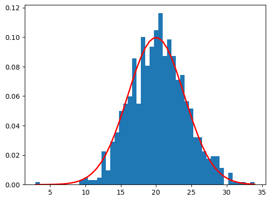

# The code uses the stats library to generate an array of 1000 points belonging to a normal
# distribution with a mean of 20 and a standard deviation of 4
# Import required libraries
from scipy import stats
import numpy as np
import matplotlib.pyplot as plt3 Welcome to your Python journey
This is a short introduction to python and using it on University computers (and your own computer should you wish to).
This documentation is available in website form or as a single PDF. If you are viewing the website version then the links on the left will help you navigate between chapters and the links on the right allow you to navigate within a webpage.
3.1 Notebooks vs code files
Traditionally, python coding has been done with individual files (usually with a .py extension). These files are edited then sent to a python interpreter to execute the code. More recently, a system based on notebooks has become very popular, particularly for science/engineering applications.
In this module we will be using .ipynb format notebooks. I prefer the notebook approach for small programming tasks, but still use the .py approach for more involved work. The lab material and coursework submissions will be jupyter notebooks, but there will be examples of .py files for you to explore across the module.
3.1.1 Notebook quickstart
If you have not used Jupyter notebooks before then read this before going any further: Jupyter Lab quickstart
The code below is an example of python code in a Jupyter notebook - the leading notebook system for python. You can download a copy of this notebook from the Python section of the MPP001 Learn page – it is called ‘BasicNotebook.ipynb’
The code has been split into three sections–these are referred to as cells.
- The first cell imports (brings in) external code libraries to extend what python can do.
- The second cell sets up some parameters
- The third cell does some working out and displays the results
This general format is quite common for a notebook. There are often more cells, but the general layout remains the same.
Note: in python the # symbol is used to mark what follows on the line as being a comment. This means that anything to the right of the symbol is ignored by python. This allows you to put explanatory notes in your code. It is also a quick way to turn off one or more lines of code when you are testing/debugging it.
# Specify the properties of the normal distribution
n_sample = 1000
mean = 20
sigma = 4# Generate an array of data belonging to the normal distribution
rand_dist1 = stats.norm.rvs(loc = mean, scale = sigma, size = n_sample)
# Check that the data meets expectations
print(f"Mean = {np.mean(rand_dist1):,.4f} and stddev = {np.std(rand_dist1):,.4f}")
print(stats.normaltest(rand_dist1))
# Plot the histogram of the data and the distribution function
count, bins, ignored = plt.hist(rand_dist1, 50, density=True)
plt.plot(bins, 1/(sigma * np.sqrt(2 * np.pi)) * np.exp( - (bins - mean)**2 / (2 * sigma**2)), linewidth=2, color='r')
plt.show()Mean = 20.3478 and stddev = 3.9695
NormaltestResult(statistic=2.74838621513032, pvalue=0.2530436924927925)
3.2 Text blocks in notebooks
You can also have blocks of text in notebooks. These allow various formatting options:
- Bold
- Itallic
highlighted
And maths is quite easy – if you are used to LaTeX then it will already be familiar to you, for example $ E = mc^2$ generates: \(E = mc^2\) - an example of ‘in-line’ maths. Pairs of dollar symbols will generate centred maths on its own line e.g. $$ E = mc^2$$ gives \[ E = mc^2\]
For text blocks Jupyter Notebooks use a formatting system called Markdown – it can do a lot more than shown above. Have a look here for more details: https://www.markdownguide.org/basic-syntax/ (or here Jupyter markdown docs)
3.3 Next steps
It is now time to start getting going with Python coding.
Notebooks with worked examples to explore and blank sections for you to complete will be provided via the Module’s Team.
3.4 Simple maths in python
Python has a range of standard mathematical functions as sumarised in the table below. If you have used something like Excel for maths then you should be familiar with them. Try to predict the outcomes of the examples given before entering them into your python system. Do they give the results you expected?
| Symbol | operation | example |
|---|---|---|
| + | addition | 3+2 |
| - | substraction | 2-3 |
| * | multiplication | 3*2 |
| / | division | 2/3 |
| ** | exponent | 3**2 |
There are a range of other maths operators as well, but this is enough for now.
3.4.1 Beyond simple maths
Given the similarity to Excel for the operators above, what do you think the following will produce?
cos(0.0)Start a new notebook and try the code in a block.
You probably got something like:
Traceback (most recent call last):
File "<pyshell#6>", line 1, in <module>
cos(0)
NameError: name 'cos' is not definedWhich is a longwinded way of the python system telling you it has no function cos(). One of the key features of python is that it is easily extendable. T:
import numpy as np
np.cos(0.0)The first line in the block above tells python to use the module called numpy (often pronounced num–pie) and all references to its contents will be preceded by np. for example np.sin(3.141). Numpy is an extensive maths library that is very well optimised and we will use it a lot in MPP001–along with a lot of other libraries.
3.4.2 as library_name
The as np can be neglected and then to access numpy’s functions numpy. will need to be added instead of ‘np’. However it is very common to use as library_name because the full library name can be quite long and this can make the card hard to read (and longer to type). Formally the as sets up an alias to the original name of the library so you.
np is used by convention for the numpy library, you can use any text identifier you like, but remember that you and others need to be able to follow the code so keep it simple. For instance you could use include numpy as Lb0r0R0cks at the start of your code and then, say 100 lines later, have Lb0r0R0cks.cos(XVal) which would be very difficult to follow and you would have to search for what it means.
In this module you’ll meet a few other widely used libraries that, like numpy, have pretty much universally accepted, standard names:
| Library | Purpose | Standard short name |
|---|---|---|
| Scipy | A collection of scientific computing methods | sp |
| Pandas | Data manipulation and analysis | pd |
| Scikit Learn | A collection of machine learning methods | sklearn |
There are plenty of other examples - look out for them in your reading/learning for this module.